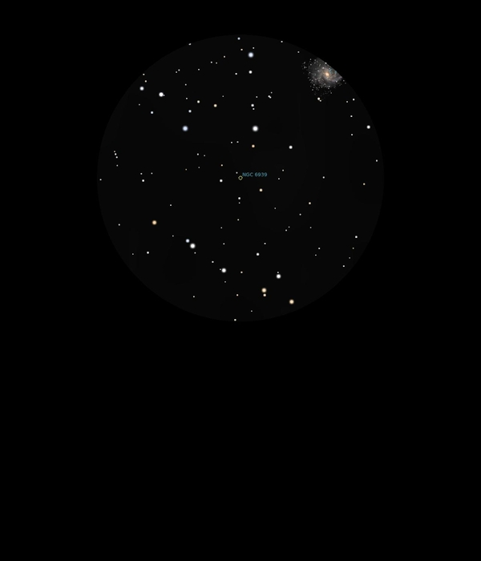

NGC 6939
Open Cluster in Cepheus
NGC 6939
Mag 7.8
08/09/16
This is a faint but resolved and really beautiful Open Cluster
just outside the 12mm FOV from NGC 6946
Sits in a nice kite shaped asterism with HIP 101307 at Mag
7.15 at its base and stars of Mags 9.9, 10.0 and 10.45 at its
head
Fantastic FOV